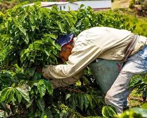
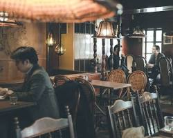
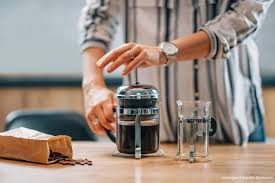
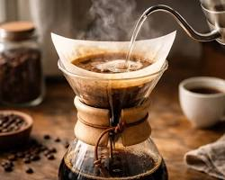
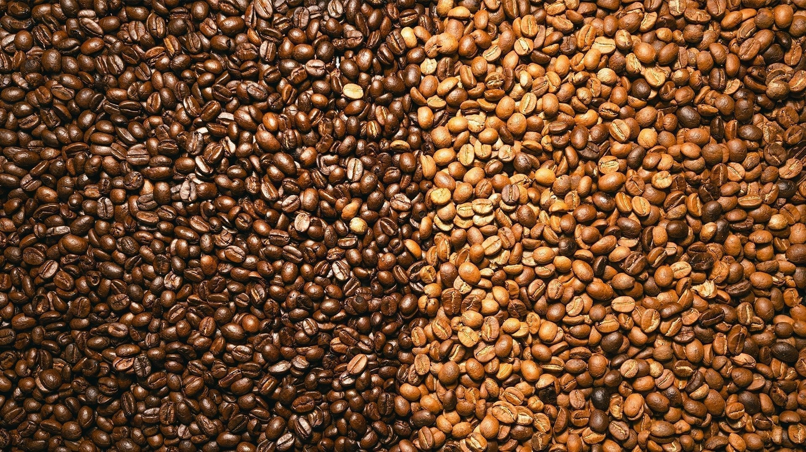
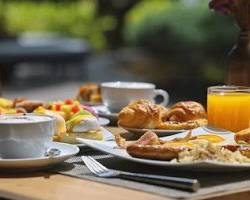

Descubrí
NUESTRA HISTORIA
GuilleCafé es un restaurante y cafetería. Está ubicado en city golf, desde 1982 produciendo con su propio grano de café importado desde Colombia.
Leer más


GuilleCafé es un restaurante y cafetería. Está ubicado en city golf, desde 1982 produciendo con su propio grano de café importado desde Colombia.
Leer más





Te invitamos al mejor restaurante/cafetería de todo Uruguay, Guille fabrica los mejores cafés que vas a probar en tu vida.

